本周主要内容：
- Spark Introduction
- Scala Introduction
- RDD Introduction
- Spark programming model
Spark Introduction
Why Spark?
-
MapReduce greatly simplified big data analysis on large, unreliable clusters. It is great at one-pass computation.
-
But as soon as it got popular, users wanted more:
- More complex, multi-pass analytics (e.g. ML, graph)
- More interactive ad-hoc(点对点) queries
- More real-time stream processing
All 3 need faster data sharing across parallel jobs
-
Goals of Spark: Keep more data in-memory to improve the performance!
-
Extend the MapReduce model to better support two common classes of analytics apps:
- Iterative algorithms (machine learning, graphs)
- Interactive data mining
What is Spark?
-
Open-source engine for large-scale data processing
- Supports generalized dataflows
- Written in Scala, with bindings in Java and Python
-
Brief History
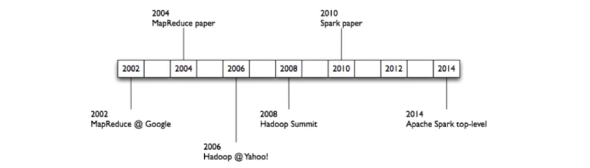 -
Improves efficiency through:
- In-memory computing primitives
- General computation graphs
Up to 100 times faster(10 * 10 on disk)
-
Improves usability through:
- Rich APIs in Scala, Java, Python
- Interactive shell
Often 5 times less code
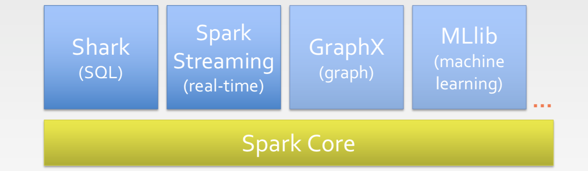
- Spark SQL (SQL on Spark)
- Spark Streaming (stream processing)
- GraphX (graph processing)
- MLlib (machine learning library)
Data Sources
- Local Files
- S3
- Hadoop Distributed Filesystem
- HBase, Cassandra, etc.
Spark Workflow
- A Spark program first creates a SparkContext object
- Tells Spark how and where to access a cluster
- Connect to several types of cluster managers (e.g., YARN, Mesos, or its own manager)
- Cluster manager:
- Allocate resources acrossapplications
- Spark executor:
- Run computations
- Access data storage
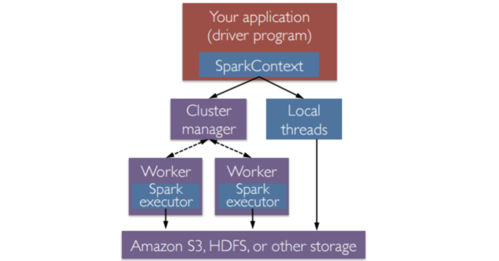
Worker Nodes and Executors
- Worker nodes are machines that run executors
- Host one or multiple Workers
- One JVM (1 process) per Worker
- Each Worker can spawn one or more Executors
- Executors run tasks
- Run in child JVM (1 process)
- Execute one or more task using threads in a ThreadPool
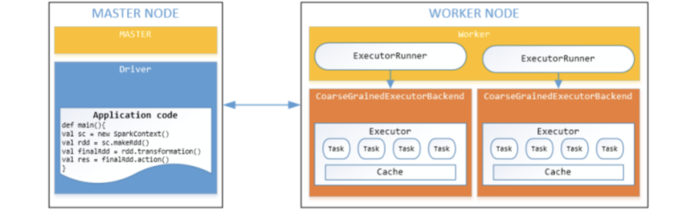
- Recommend a Clear Explanation for Spark
From the course above, it shows main differences between MapReduce and Spark
-
MapReduce
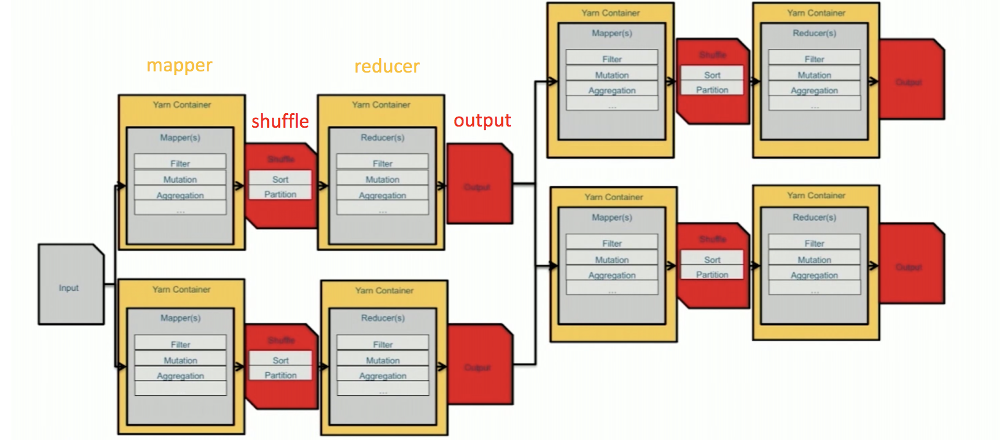 -
Spark
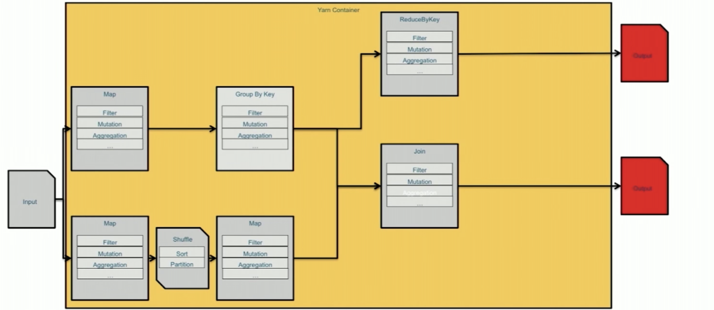- Red: required interaction with disk ( I/O cost)
- Yellow: required spinning up and spinning down containers across the cluster
Scala Introduction
- Scala(Scalable language)
- Scala is a general-purpose programming language designed to express common programming patterns in a concise, elegant, and type-safe way
- Scala supports both Object Oriented Programming and Functional Programming
- Scala is Practical
- Can be used as drop-in replacement for Java, Mixed Scala/Java projects
- Use existing Java libraries
- Use existing Java tools (Ant, Maven, JUnit, etc…)
- Decent IDE Support (NetBeans, IntelliJ, Eclipse)
Scala Basic Syntax
- When considering a Scala program, it can be defined as a collection of objects that communicate via invoking each other’s methods.
- Object − same as in Java
- Class − same as in Java
- Methods − same as in Java
- Fields − Each object has its unique set of instant variables, which are called fields. An object’s state is created by the values assigned to these fields.
- Traits − Like Java Interface. A trait encapsulates method and field definitions, which can then be reused by mixing them into classes.
- Closure − A closure is a function, whose return value depends on the value of one or more variables declared outside this function.
closure = function + enviroment
- Scala is Statically Typed
- You don’t have to specify a type in most cases
1 | val sum = 1 + 2 + 3 |
- Scala is High level
E.g., Java vs. scala check string uppercase
1 | // Java – Check if string has uppercase character |
1 | // Scala |
- Scala is Concise
1 | //java |
1 | //scala |
- Variables and Values
- Variables: values stored can be changed
1 | var foo = "foo" |
- Values: immutable variable 不可改变的
1 | val foo = "foo" |
- Scala is Pure Object Oriented
1 | // Every value is an object |
- Scala Traits
1 | // Like interfaces in Java |
- Scala is Functional
A function that does at least one of the following:- takes one or more functions as arguments
- returns a function as its result
1 | val plusOne = (x:Int) => x + 1 |
- The Usage of “_” in Scala
- In anonymous functions, the “_” acts as a placeholder for parameters
1 | nums.map(x => x + 1) |
- You can use two or more underscores to refer different parameters.
1 | val sum = List(1,2,3,4,5).reduceLeft(_+_) |
RDD Introduction
Why RDD?
- Existing Systems
- Existing in-memory storage systems have interfaces based on fine-grained updates
- Reads and writes to cells in a table
- E.g., databases, key-value stores, distributed memory
- Requires replicating data or logs across nodes for fault tolerance -> expensive!
- 10-100x slower than memory write
- Existing in-memory storage systems have interfaces based on fine-grained updates
How to design a distributed memory abstraction that is both fault-tolerant and efficient?
What is RDD?
-
RDD(Resilient Distributed Datasets):
A Fault-Tolerant Abstraction for In-Memory Cluster Computing.
RDD is a distributed memory abstraction that lets programmers perform in-memory computations on large clusters in a fault-tolerant manner. -
Resilient(有弹性)
Fault-tolerant, is able to recompute missing or damaged partitions due to node failures. -
Distributed
Data residing on multiple nodes in a cluster. -
Dataset
A collection of partitioned elements, e.g.tuples or other objects(that represent records of the data you work with). -
RDD is the primary data abstraction in Apache Spark and the core of Spark. It enables operations on collection of elements in parallel.
RDD Traits
- In-Memory, i.e. data inside RDD is stored in memory as much (size) and long (time) as possible.
- Immutable(不可改变的) or Read-Only, i.e. it does not change once created and can only be transformed using transformations to new RDDs.
- Lazy evaluated, i.e. the data inside RDD is not available or transformed until an action is executed that triggers the execution.
- Cacheable, i.e. you can hold all the data in a persistent “storage” like memory (default and the most preferred) or disk (the least preferred due to access speed).
- Parallel, i.e. process data in parallel.
- Typed, i.e. values in a RDD have types, e.g. RDD[Long] or RDD[(Int, String)].
- Partitioned, i.e. the data inside a RDD is partitioned (split into partitions) and then distributed across nodes in a cluster (one partition per JVM that may or may not correspond to a single node).
RDD Operations
- Transformation: returns a new RDD.
- Nothing gets evaluated when you call a Transformation function, it
just takes an RDD and return a new RDD. - Transformation functions include map, filter, flatMap, groupByKey, reduceByKey, aggregateByKey, filter, join, etc.
- Nothing gets evaluated when you call a Transformation function, it
- map: Return a new distributed dataset formed by passing each element of the source through a function func.
一一映射- flatMap: Similar to map, but each input item can be mapped to 0 or more output items (so func should return a Seq rather than a single item).
先映射，再扁平化
- Action: evaluates and returns a new value.
- When an Action function is called on a RDD object, all the data processing queries are computed at that time and the result value is returned.
- Action operations include reduce, collect, count, first, take, countByKey, foreach, saveAsTextFile, etc.
Spark RDD API Examples
Working with RDDs
- Create an RDD from a data source
- by parallelizing existing collections (lists or arrays)
- by transforming an existing RDDs
- from files in HDFS or any other storage system
- Apply transformations to a RDD. E.g., Map, Filter
- Apply actions to a RDD. E.g., Collect, Count
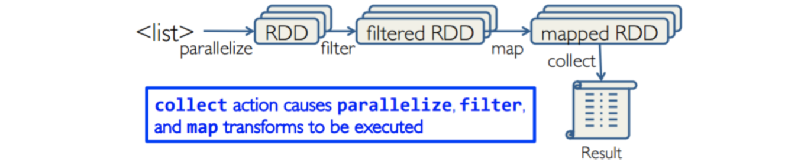
- Users can control two other aspects:
- Persistence
- Partitioning
Creating RDDs
- From HDFS, text files, Amazon S3, Apache HBase, SequenceFiles, any other Hadoop InputFormat
- Creating an RDD from a File
E.g., val inputfile = sc.textFile("…", 4)- RDD distributed in 4 partitions
- Elements are lines of input
- Lazy evaluation means no execution happens now
- Turn a collection into an RDD
- sc.parallelize([1, 2, 3]), creating from a Python list
- sc.parallelize(Array(“hello”, “spark”)), creating from a Scala Array
- Creating an RDD from an existing Hadoop InputFormat
- sc.hadoopFile(keyClass, valClass, inputFmt, conf)
Transformations
- Create new datasets from an existing one
- Use lazy evaluation: results not computed right away – instead Spark remembers set of transformations applied to base dataset
- Spark optimizes the required calculations
- Spark recovers from failures
- Some transformation functions
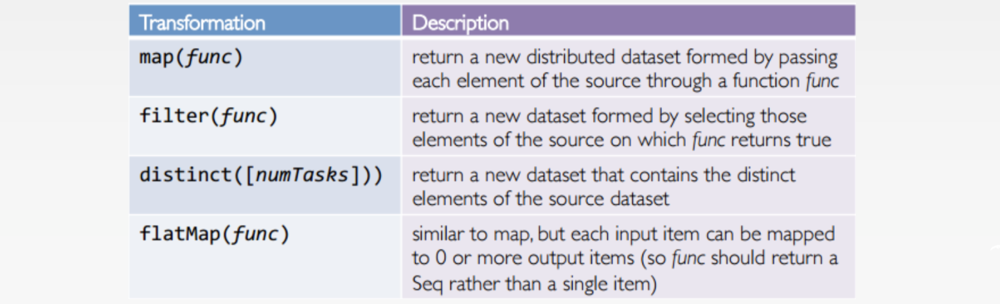
Common transformations API guide
Actions
- Cause Spark to execute recipe to transform source
- Mechanism for getting results out of Spark
- Some action functions
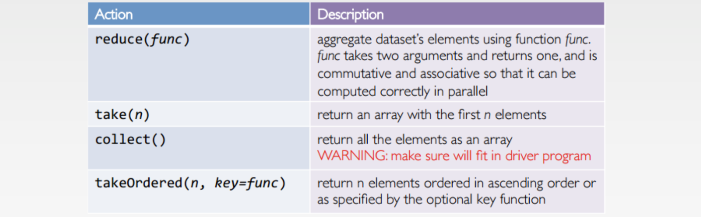
Common actions API guide
Example
1 | //base RDD |
RDD Persistence: Cache/Persist
- When you persist an RDD, each node stores any partitions of it. You can reuse it in other actions on that dataset
- Each persisted RDD can be stored using a different storage level.
- MEMORY_ONLY:
- Store RDD as deserialized Java objects in the JVM.
- If the RDD does not fit in memory, some partitions will not be cached and will be recomputed when they’re needed.
- This is default level.
- MEMORY_AND_DISK:
- If the RDD does not fit in memory, store the partitions that don’t fit on disk, and read them from there when they’re needed.
- MEMORY_ONLY:
Example:
1 | val lines = sc.textFile(“hdfs://...”) |
- If you do errors.count() again, the file will be loaded again and computed again.
- Persist will tell Spark to cache the data in memory, to reduce the data loading cost for further actions on the same data.
- error.persist() will do nothing. It is a lazy operation. But now the RDD says “read this file and then cache the contents”. The action will trigger computation and data caching.
Key-Value RDDs
- Similar to Map Reduce, Spark supports Key-Value pairs
- Each element of a Pair RDD is a pair tuple
- Some Key-Value transformation functions:
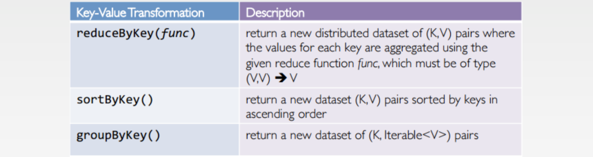
Example
1 | //Create a pair RDD from existing RDDs val pairs = sc.parallelize( List( (“This”, 2), (“is”, 3), (“Spark”, 5), (“is”, 3) ) ) |
Spark Programming Model
How Spark Works
- User application create RDDs, transform them, and run actions.
- This results in a DAG (Directed Acyclic Graph) of operators.
- DAG is compiled into stages
- Each stage is executed as a series of Task (one Task for each Partition).
Word Count in Spark
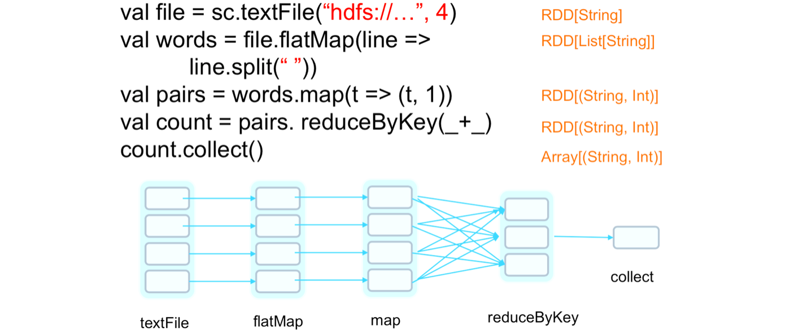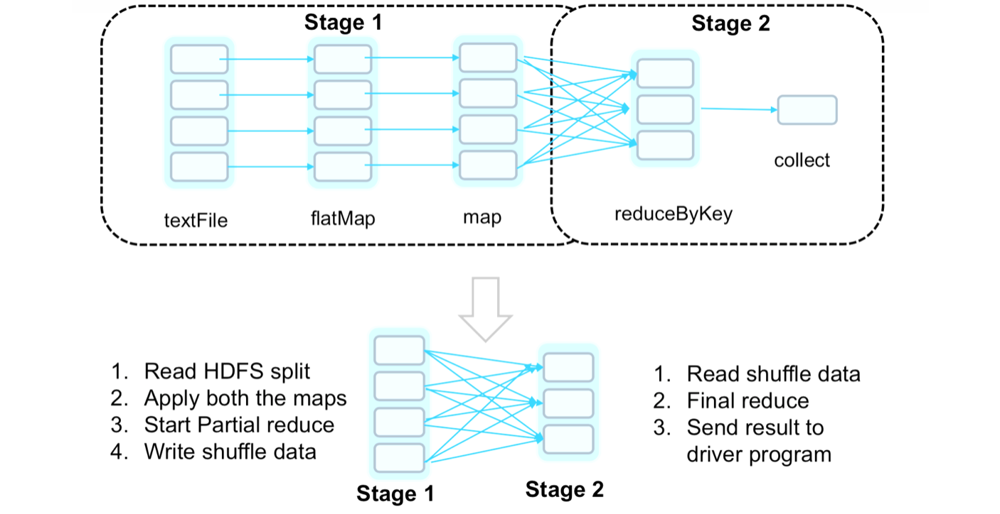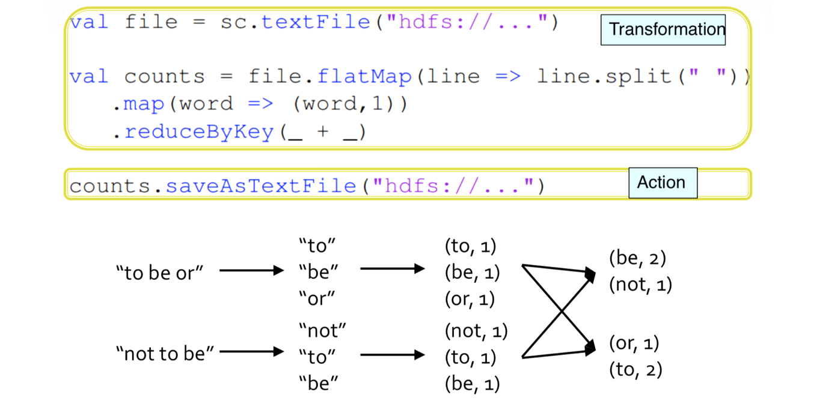